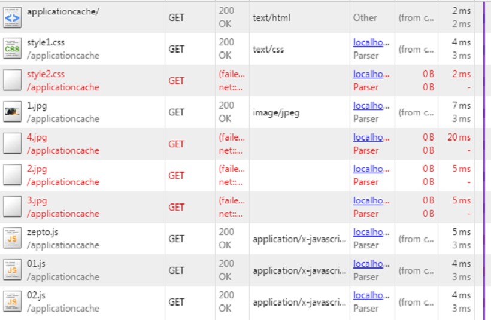
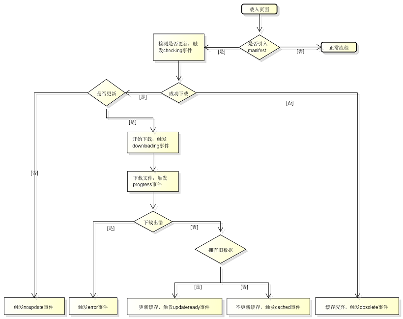

<!DOCTYPE html>
<html>
<head><meta name="generator" content="Hexo 3.8.0">
  <meta charset="utf-8">
  
  <title>HTML5介绍 | LIUXUEWEN&#39;S BLOG</title>
  <meta name="viewport" content="width=device-width, initial-scale=1, maximum-scale=1">
  
    <meta name="keywords" content="LIUXUEWEN,LIUXUEWEN's Blog">
  
  <meta name="description" content="一、说说你对HTML5认识?  1）是什么：  HTML5指的是包括 HTML 、 CSS 和 JavaScript 在内的一套技术组合。它希望能够减少网页浏览器对于需要插件的丰富性网络应用服务（ Plug-in-Based Rich Internet Application ， RIA ），例如： AdobeFlash 、 Microsoft Silverlight 与 Oracle JavaF">
<meta name="keywords" content="前端-HTML5">
<meta property="og:type" content="article">
<meta property="og:title" content="HTML5介绍">
<meta property="og:url" content="http://liuxuewen-site.github.io/2018/02/04/HTML5-bs-basic/index.html">
<meta property="og:site_name" content="LIUXUEWEN&#39;S BLOG">
<meta property="og:description" content="一、说说你对HTML5认识?  1）是什么：  HTML5指的是包括 HTML 、 CSS 和 JavaScript 在内的一套技术组合。它希望能够减少网页浏览器对于需要插件的丰富性网络应用服务（ Plug-in-Based Rich Internet Application ， RIA ），例如： AdobeFlash 、 Microsoft Silverlight 与 Oracle JavaF">
<meta property="og:locale" content="default">
<meta property="og:image" content="http://liuxuewen-site.github.io/2018/02/04/HTML5-bs-basic/1.png">
<meta property="og:image" content="http://liuxuewen-site.github.io/2018/02/04/HTML5-bs-basic/2.png">
<meta property="og:updated_time" content="2019-01-25T10:33:13.710Z">
<meta name="twitter:card" content="summary">
<meta name="twitter:title" content="HTML5介绍">
<meta name="twitter:description" content="一、说说你对HTML5认识?  1）是什么：  HTML5指的是包括 HTML 、 CSS 和 JavaScript 在内的一套技术组合。它希望能够减少网页浏览器对于需要插件的丰富性网络应用服务（ Plug-in-Based Rich Internet Application ， RIA ），例如： AdobeFlash 、 Microsoft Silverlight 与 Oracle JavaF">
<meta name="twitter:image" content="http://liuxuewen-site.github.io/2018/02/04/HTML5-bs-basic/1.png">
  
  
    <link rel="icon" href="/favicon.ico">
  
  <link href="//cdn.bootcss.com/font-awesome/4.7.0/css/font-awesome.min.css" rel="stylesheet" type="text/css">
  <link rel="stylesheet" href="/css/style.css">
  <script src="/js/pace.min.js"></script>
  

  
  

</head>
</html>
<body>
  <div id="container">
      <header id="header">
    <div id="banner"></div>
    <div id="header-outer">
        <div id="header-menu" class="header-menu-pos animated">
            <div class="header-menu-container">
                <a href="/" class="left">
                    <span class="site-title">I AM LIUXUEWEN</span>
                </a>
                <nav id="header-menu-nav" class="right">
                    
                    <a href="/">
                        <i class="fa fa-home"></i>
                        <span>Home</span>
                    </a>
                    
                    <a href="/archives">
                        <i class="fa fa-archive"></i>
                        <span>Archives</span>
                    </a>
                    
                    <a href="/about">
                        <i class="fa fa-user"></i>
                        <span>About</span>
                    </a>
                    
                </nav>
                <a class="mobile-header-menu-button">
                    <i class="fa fa-bars"></i>
                </a>
            </div>
        </div>
        <div id="header-row">
            <div id="logo">
                <a href="/">
                    
                </a>
            </div>
            <div class="header-info">
                <div id="header-title">
                    
                    <h2>
                        I AM LIUXUEWEN
                    </h2>
                    
                </div>
                <div id="header-description">
                    
                    <h3>
                        一个 宅不住 的 IT程序员
                    </h3>
                    
                </div>
            </div>
            <nav class="header-nav">
                <div class="social">
                    
                        <a title="Github" target="_blank" href="//github.com/liuxuewen-site">
                            <i class="fa fa-github fa-2x"></i></a>
                    
                        <a title="Weibo" "="">
                            <i class="fa fa-weibo fa-2x"></i></a>
                    
                        <a title="Weixin" "="">
                            <i class="fa fa-weixin fa-2x"></i></a>
                    
                </div>
            </nav>
        </div>
    </div>
</header>
      <div class="outer">
        <section id="main" class="body-wrap"><article id="post-HTML5-bs-basic" class="article article-type-post" itemscope="" itemprop="blogPost">
  <div class="article-inner">
    
      <header class="article-header">
        
  
    <h1 class="post-title" itemprop="name">
      HTML5介绍
    </h1>
    <div class="post-title-bar">
      <ul>
          
              <li>
                  <i class="fa fa-book"></i>
                  
                      <a href="/categories/前端/">前端</a>
                  
              </li>
          
        <li>
          <i class="fa fa-calendar"></i>  2018-02-04
        </li>
        <li>
          <i class="fa fa-eye"></i>
          <span id="busuanzi_value_page_pv"></span>
        </li>
      </ul>
    </div>
  

          
      </header>
    
    <div class="article-entry post-content" itemprop="articleBody">
      
            
            <h3 id="一、说说你对HTML5认识"><a href="#一、说说你对HTML5认识" class="headerlink" title="一、说说你对HTML5认识?"></a>一、说说你对HTML5认识?</h3><p>  1）是什么：<br>  HTML5指的是包括 HTML 、 CSS 和 JavaScript 在内的一套技术组合。它希望能够减少网页浏览器对于需要插件的丰富性网络应用服务（ Plug-in-Based Rich Internet Application ， RIA ），例如： AdobeFlash 、 Microsoft Silverlight 与 Oracle JavaFX 的需求，并且提供更多能有效加强网络应用的标准集。 HTML5 是 HTML 最新版本， 2014 年 10 月由万维网联盟（ W3C ）完成标准制定。目标是替换 1999 年所制定的 HTML 4.01 和 XHTML 1.0 标准，以期能在互联网应用迅速发展的时候，使网络标准达到匹配当代的网络需求。</p>
<p>  2）为什么：<br>  HTML4陈旧不能满足日益发展的互联网需要，特别是移动互联网。为了增强浏览器功能 Flash 被广泛使用，但安全与稳定堪忧，不适合在移动端使用（耗电、触摸、不开放）。<br>  HTML5增强了浏览器的原生功能，符合 HTML5 规范的浏览器功能将更加强大，减少了 Web 应用对插件的依赖，让用户体验更好，让开发更加方便，另外 W3C 从推出 HTML4.0 到 5.0 之间共经历了 17 年， HTML 的变化很小，这并不符合一个好产品的演进规则。</p>
<p>  3）标注：<br>  HTML5 文档类型为：&lt; !doctype html > ；使用 UTF-8 编码：&lt; meta charset=”UTF-8” ></p>
<h3 id="二、HTML5的优点与缺点？"><a href="#二、HTML5的优点与缺点？" class="headerlink" title="二、HTML5的优点与缺点？"></a>二、HTML5的优点与缺点？</h3><p>  优点：<br>  a、网络标准统一，HTML5本身是由W3C推荐出来的。<br>  b、多设备、跨平台<br>  c、即时更新。<br>  d、提高可用性和改进用户的友好体验；<br>  e、有几个新的标签，这将有助于开发人员定义重要的内容；<br>  f、可以给站点带来更多的多媒体元素(视频和音频)；<br>  g、可以很好的替代Flash和Silverlight；<br>  h、涉及到网站的抓取和索引的时候，对于SEO很友好；<br>  i、被大量应用于移动应用程序和游戏。</p>
<p>  缺点：<br>  a、安全：像之前Firefox4的web socket和透明代理的实现存在严重的安全问题，同时web storage、web socket 这样的功能很容易被黑客利用，来盗取用户的信息和资料。<br>  b、技术门槛：HTML5简化开发者工作的同时代表了有许多新的属性和API需要开发者学习，像web worker、web socket、web storage 等新特性，后台甚至浏览器原理的知识，机遇的同时也是巨大的挑战。<br>  c、性能：某些平台上的引擎问题导致HTML5性能低下。<br>  d、完善性：许多特性各浏览器的支持程度也不一样。<br>  e、浏览器兼容性：最大缺点，IE9以下浏览器几乎全军覆没。 </p>
<h3 id="三、HTML5有哪些改变（新增、移除等）？"><a href="#三、HTML5有哪些改变（新增、移除等）？" class="headerlink" title="三、HTML5有哪些改变（新增、移除等）？"></a>三、HTML5有哪些改变（新增、移除等）？</h3><p>  Html5新增了 27 个元素，废弃了 16 个元素。(后来更多)<br>  1）新增元素（如）：<br>  &emsp;&emsp;结构性元素（主要负责web上下文结构的定义）：<br>  &emsp;&emsp;&emsp;&emsp;section：在 web 页面应用中，该元素也可用于区域的章节描述。<br>  &emsp;&emsp;&emsp;&emsp;header：页面主体上的头部， header 元素往往在一对 body 元素中。<br>  &emsp;&emsp;&emsp;&emsp;footer：页面的底部（页脚），通常会标出网站的相关信息。<br>  &emsp;&emsp;&emsp;&emsp;nav：专门用于菜单导航、链接导航的元素，是 navigator 的缩写。<br>  &emsp;&emsp;&emsp;&emsp;article：用于表现一篇文章的主体内容，一般为文字集中显示的区域。</p>
<p>  &emsp;&emsp;级块性元素（主要完成web页面区域的划分，确保内容的有效分割）：<br>  &emsp;&emsp;&emsp;&emsp;aside：用于表达注记、贴士、侧栏、摘要、插入的引用等作为补充主体的内容。<br>  &emsp;&emsp;&emsp;&emsp;figure：是对多个元素进行组合并展示的元素，通常与 ficaption 联合使用。<br>  &emsp;&emsp;&emsp;&emsp;code：表示一段代码块。<br>  &emsp;&emsp;&emsp;&emsp;dialog：用于表达人与人间的对话，包含dt和dd两个组合元素，dt表示说话者，dd 表示说话内容。 </p>
<p>  &emsp;&emsp;行内语义性元素（主要完成web页面具体内容的引用和描述，是丰富内容展示的基础）：<br>  &emsp;&emsp;&emsp;&emsp;meter：表示特定范围内的数值，可用于工资、数量、百分比等。<br>  &emsp;&emsp;&emsp;&emsp;time：表示时间值。<br>  &emsp;&emsp;&emsp;&emsp;progress：用来表示进度条，可通过对其 max 、 min 、 step 等属性进行控制，完成对进度的表示和监事。<br>  &emsp;&emsp;&emsp;&emsp;video：视频元素，用于支持和实现视频文件的直接播放，支持缓冲预载和多种视频媒体格式。<br>  &emsp;&emsp;&emsp;&emsp;audio：音频元素，用于支持和实现音频文件的直接播放，支持缓冲预载和多种音频媒体格式。 </p>
<p>  &emsp;&emsp;交互性元素（主要用于功能性的内容表达，会有一定的内容和数据的关联，是各种事件的基础）：<br>  &emsp;&emsp;&emsp;&emsp;details：表示一段具体内容，但内容默认可能不显示，通过某种手段（如单击）与 legend 交互才会显示出来。<br>  &emsp;&emsp;&emsp;&emsp;datagrid：用来控制客户端数据与显示，可以由动态脚本及时更新。<br>  &emsp;&emsp;&emsp;&emsp;menu：主要用于交互菜单（曾被废弃又被重新启用的元素）。<br>  &emsp;&emsp;&emsp;&emsp;command：用来处理命令按钮。 </p>
<p>  &emsp;&emsp;表单元素：<br>  &emsp;&emsp;&emsp;&emsp;datalist：规定输入域的选项列表，通过它包含的option来创建列表，必须要含value值。<br>  &emsp;&emsp;&emsp;&emsp;keygen：一种验证用户的可靠方法，提供公钥和密钥，但兼容性差所以用的不多。<br>  &emsp;&emsp;&emsp;&emsp;output：提供不同类型的输出。</p>
<p>  2）废弃元素（如）：<br>  &emsp;&emsp;纯表现的元素：<br>  &emsp;&emsp;&emsp;&emsp;basefont：默认字体，不设置字体，以此渲染<br>  &emsp;&emsp;&emsp;&emsp;font：字体标签<br>  &emsp;&emsp;&emsp;&emsp;cnter：水平居中<br>  &emsp;&emsp;&emsp;&emsp;u：下划线<br>  &emsp;&emsp;&emsp;&emsp;big：大字体<br>  &emsp;&emsp;&emsp;&emsp;strike：中横线<br>  &emsp;&emsp;&emsp;&emsp;tt：文本等宽 </p>
<p>  &emsp;&emsp;框架集：<br>  &emsp;&emsp;&emsp;&emsp;frameset：框架集。<br>  &emsp;&emsp;&emsp;&emsp;noframes：可为那些不支持框架的浏览器显示文本。noframes 元素位于 frameset 元素内部。<br>  &emsp;&emsp;&emsp;&emsp;frame：定义 frameset 中的一个特定的窗口（框架）。</p>
<p>  3）新增API（如）：<br>  &emsp;&emsp;媒体API（getUserMedia API）：允许Web应用程序访问摄像头和麦克风而无需使用插件。<br>  &emsp;&emsp;全屏API（Fullscreen API）：允许开发者以编程方式将Web应用程序全屏运行，使Web应用程序更像本地应用程序。<br>  &emsp;&emsp;页面可见性API（Page Visibility API）：用来检测页面对用户的可见性，返回用户当前浏览页面或标签的状态变化。<br>  &emsp;&emsp;电池API（Battery API）：针对移动设备应用程序的API，主要用于检测设备电池信息。<br>  &emsp;&emsp;预加载API（Link Prefetching）：预加载网页内容，为浏览者提供一个平滑的浏览体验。</p>
<h3 id="四、HTML5行内元素有哪些-块级元素有哪些-空元素有哪些"><a href="#四、HTML5行内元素有哪些-块级元素有哪些-空元素有哪些" class="headerlink" title="四、HTML5行内元素有哪些,块级元素有哪些, 空元素有哪些?"></a>四、HTML5行内元素有哪些,块级元素有哪些, 空元素有哪些?</h3><p>  (1)行内元素<br>  a - 锚点<br>  abbr - 缩写<br>  acronym - 首字 （ abbr代替 ）<br>  b - 粗体 ( 不推荐 )<br>  bdo - bidi override<br>  big - 大字体<br>  br - 换行<br>  cite - 引用<br>  code - 计算机代码 ( 在引用源码的时候需要 )<br>  dfn - 定义字段<br>  em - 强调<br>  font - 字体设定 ( 不推荐 )<br>  i - 斜体<br>  img - 图片<br>  input - 输入框<br>  kbd - 定义键盘文本<br>  label - 表格标签<br>  q - 短引用<br>  s - 中划线 ( 不推荐 )<br>  samp - 定义范例计算机代码<br>  select - 项目选择<br>  small - 小字体文本<br>  span - 常用内联容器，定义文本内区块<br>  strike - 中划线<br>  strong - 粗体强调<br>  sub - 下标<br>  sup - 上标<br>  textarea - 多行文本输入框<br>  tt - 电传文本<br>  u - 下划线<br>  var - 定义变量 </p>
<p>  (2)块元素<br>  address - 地址<br>  blockquote - 块引用<br>  center - 举中对齐块<br>  dir - 目录列表<br>  div - 常用块级容易，也是 css layout 的主要标签<br>  dl - 定义列表<br>  fieldset - form控制组<br>  form - 交互表单<br>  h3-大标题<br>  h4 - 副标题<br>  h3 - 3级标题<br>  h4 - 4级标题<br>  h5 - 5级标题<br>  h6 - 6级标题<br>  hr - 水平分隔线<br>  isindex - input prompt<br>  menu - 菜单列表<br>  noframes - frames可选内容，（对于不支持 frame 的浏览器显示此区块内容<br>  noscript - ）可选脚本内容（对于不支持 script 的浏览器显示此内容）<br>  ol - 排序表单<br>  p - 段落<br>  pre - 格式化文本<br>  table - 表格<br>  ul - 非排序列表</p>
<p>  (3)空元素 ( 在 HTML[1] 元素中，没有内容的 HTML 元素被称为空元素 )<br>  br<br>  hr<br>  input<br>  img<br>  link<br>  meta</p>
<p>  (4)可变元素 ( 根据上下文语境决定该元素为块元素或者内联元素。)<br>  applet - java applet<br>  button - 按钮<br>  del - 删除文本<br>  iframe - inline frame<br>  ins - 插入的文本<br>  map - 图片区块 (map)<br>  object - object对象<br>  script - 客户端脚本 </p>
<h3 id="五、谈谈你对canvas的理解？"><a href="#五、谈谈你对canvas的理解？" class="headerlink" title="五、谈谈你对canvas的理解？"></a>五、谈谈你对canvas的理解？</h3><p>  canvas是HTML5中新增的一个标签，它可以实现网页中动态的2D与3D图像技术。其与SVG及VML之间的区别是，有一个基于JavaScript的绘图API，而SVG和VML使用一个XML文档来描述绘图。SVG绘图容易编辑与生成，但功能明显要弱一些。 canvas可以完成动画、游戏、图表、图像处理等原来需要Flash完成的一些功能。 </p>
<h3 id="六、HTML5-存储类型？"><a href="#六、HTML5-存储类型？" class="headerlink" title="六、HTML5 存储类型？"></a>六、HTML5 存储类型？</h3><p>  HTML5之前，存储是使用cookies的。HTML5后提供了下面两种本地存储方案：<br>  1）localStorage：用于持久化的本地存储，数据永远不会过期，关闭浏览器也不会丢失。<br>  2）sessionStorage：同一个会话中的页面才能访问并且当会话结束后数据也随之销毁。不是一种持久化的本地存储，仅仅是会话级别的存储。</p>
<p>  详情请看之前文章。</p>
<h3 id="七、HTML5有哪些媒体标签？"><a href="#七、HTML5有哪些媒体标签？" class="headerlink" title="七、HTML5有哪些媒体标签？"></a>七、HTML5有哪些媒体标签？</h3><p>  html5除了audio和video标签外，还支持以下标签：</p>
<p>  &lt; embed > 标签定义嵌入的内容，比如插件:<br>  <figure class="highlight plain"><table><tr><td class="gutter"><pre><span class="line">1</span><br></pre></td><td class="code"><pre><span class="line">&lt;embed type=&quot;video/quicktime&quot; src= &quot;Fishing.mov&quot;&gt;</span><br></pre></td></tr></table></figure></p>
<p>  &lt; source > 定义数据源（可多个）:<br>  <figure class="highlight bash"><table><tr><td class="gutter"><pre><span class="line">1</span><br><span class="line">2</span><br><span class="line">3</span><br><span class="line">4</span><br></pre></td><td class="code"><pre><span class="line">&lt;video width=<span class="string">"450"</span> height= <span class="string">"340"</span> controls&gt;</span><br><span class="line">  &lt;<span class="built_in">source</span> src=<span class="string">"jamshed.mp4"</span> <span class="built_in">type</span>=<span class="string">"video/mp4"</span>&gt;</span><br><span class="line">  &lt;<span class="built_in">source</span> src=<span class="string">"jamshed.ogg"</span> <span class="built_in">type</span>=<span class="string">"video/ogg"</span>&gt;</span><br><span class="line">&lt;/video&gt;</span><br></pre></td></tr></table></figure></p>
<p>  &lt; track > 标签为诸如video元素之类的媒介规定外部文本轨道,用于规定字幕文件或其他包含文本的文件，当媒介播放时，这些文件是可见的。<br>  <figure class="highlight bash"><table><tr><td class="gutter"><pre><span class="line">1</span><br><span class="line">2</span><br><span class="line">3</span><br><span class="line">4</span><br><span class="line">5</span><br><span class="line">6</span><br></pre></td><td class="code"><pre><span class="line">&lt;video width=” 450 ″ height= ” 340 ″ controls&gt;</span><br><span class="line">  &lt;<span class="built_in">source</span> src=” jamshed.mp4 ″ <span class="built_in">type</span>= ” video/mp4 ″ &gt;</span><br><span class="line">  &lt;<span class="built_in">source</span> src=” jamshed.ogg ” <span class="built_in">type</span>= ” video/ogg ” &gt;</span><br><span class="line">  &lt;track kind=” subtitles ” label= ” English ” src= ” jamshed_en.vtt ” srclang= ” en ” default&gt;&lt;/track&gt;</span><br><span class="line">  &lt;track kind=” subtitles ” label= ” Arabic ” src= ” jamshed_ar.vtt ” srclang= ” ar ” &gt;&lt;/track&gt;</span><br><span class="line">&lt;/video&gt;</span><br></pre></td></tr></table></figure></p>
<h3 id="八、HTML5应用程序缓存？"><a href="#八、HTML5应用程序缓存？" class="headerlink" title="八、HTML5应用程序缓存？"></a>八、HTML5应用程序缓存？</h3><p>  html5之前的网页都是无连接，须联网才能访问，这对于PC问题不大，但到了移动互联网时代，设备终端位置不再固定，依赖无线信号，网络的可靠性降低，比如坐在火车上，过隧道时便无法访问网站，这对于web的伤害是很大的。</p>
<p>  HTML5引入了应用程序缓存技术，意味着web应用可进行缓存，并在没有网络的情况下使用，通过创建cache manifest文件，让应用程序可以获取本地的网站内容，例如HTML、CSS、图片以及 JavaScript。可以轻松的创建离线。其优势在：<br>  1）离线浏览 - 用户可在应用离线时使用它们<br>  2）速度 - 已缓存资源加载得更快<br>  3）减少服务器负载 - 浏览器将只从服务器下载更新过或更改过的资源。</p>
<p>  html5应用程序缓存与传统浏览器缓存相比，它不强制用户访问的网站内容被缓存。主流浏览器皆支持，IE8 IE9除外。</p>
<p>  应用程序缓存的使用要做两方面的工作：<br>  1）浏览器上只需要一个简单的设置即可：&lt; html  manifest=”demo.appcache” ><br>  2）服务器端需要维护一个manifest清单,如:<br>  <figure class="highlight plain"><table><tr><td class="gutter"><pre><span class="line">1</span><br><span class="line">2</span><br><span class="line">3</span><br><span class="line">4</span><br><span class="line">5</span><br><span class="line">6</span><br><span class="line">7</span><br><span class="line">8</span><br><span class="line">9</span><br><span class="line">10</span><br><span class="line">11</span><br><span class="line">12</span><br><span class="line">13</span><br><span class="line">14</span><br><span class="line">15</span><br><span class="line">16</span><br><span class="line">17</span><br></pre></td><td class="code"><pre><span class="line">CACHE MANIFEST</span><br><span class="line"></span><br><span class="line">CACHE:</span><br><span class="line"># 需要缓存的列表</span><br><span class="line">style1.css</span><br><span class="line">1.jpg</span><br><span class="line">01.js</span><br><span class="line">http://localhost/applicationcache/02.js</span><br><span class="line">http://localhost/applicationcache/zepto.js</span><br><span class="line"></span><br><span class="line">NETWORK:</span><br><span class="line"># 不需要缓存的</span><br><span class="line">4.jpg</span><br><span class="line"></span><br><span class="line">FALLBACK:</span><br><span class="line"># 访问缓存失败后，备用访问的资源，第一个是访问源，第二个是替换文件*.html /offline.html</span><br><span class="line">2.jpg/3.jpg</span><br></pre></td></tr></table></figure></p>
<p>  注意：<br>  <figure class="highlight bash"><table><tr><td class="gutter"><pre><span class="line">1</span><br><span class="line">2</span><br><span class="line">3</span><br><span class="line">4</span><br><span class="line">5</span><br><span class="line">6</span><br><span class="line">7</span><br><span class="line">8</span><br><span class="line">9</span><br><span class="line">10</span><br><span class="line">11</span><br><span class="line">12</span><br><span class="line">13</span><br><span class="line">14</span><br><span class="line">15</span><br><span class="line">16</span><br><span class="line">17</span><br><span class="line">18</span><br><span class="line">19</span><br><span class="line">20</span><br><span class="line">21</span><br><span class="line">22</span><br><span class="line">23</span><br><span class="line">24</span><br><span class="line">25</span><br><span class="line">26</span><br><span class="line">27</span><br></pre></td><td class="code"><pre><span class="line"><span class="comment"># 1）manifest 文件可分为三个部分：</span></span><br><span class="line"><span class="comment">#    CACHE MANIFEST - 在此标题下列出的文件将在首次下载后进行缓存</span></span><br><span class="line"><span class="comment">#    NETWORK - 在此标题下列出的文件需要与服务器的连接，且不会被缓存</span></span><br><span class="line"><span class="comment">#    FALLBACK - 在此标题下列出的文件规定当页面无法访问时的回退页面（比如 404 页面）</span></span><br><span class="line"></span><br><span class="line"><span class="comment"># 2）manifest文件需配置正确的MIME-type，即"text/cache-manifest"。须在web服务器上配置，不同服务器不一样。</span></span><br><span class="line"></span><br><span class="line"><span class="comment"># 3）Application Cache的尺寸限制统一在5M，单个文件不要超出这个上限。</span></span><br><span class="line"></span><br><span class="line"><span class="comment"># 4）如果manifest文件，或者内部列举的某一个文件不能正常下载，整个更新过程都将失败，浏览器继续全部使用老的缓存。</span></span><br><span class="line"></span><br><span class="line"><span class="comment"># 5）引用manifest的html必须与manifest文件同源。FALLBACK中的资源必须和manifest文件同源。</span></span><br><span class="line"></span><br><span class="line"><span class="comment"># 6）当一个资源被缓存后，该浏览器直接请求这个绝对路径也会访问缓存中的资源。</span></span><br><span class="line"></span><br><span class="line"><span class="comment"># 7）站点中的其他页面即使没有设置manifest属性，请求的资源如果在缓存中也从缓存中访问。</span></span><br><span class="line"></span><br><span class="line"><span class="comment"># 8）当manifest文件发生改变时，资源请求本身也会触发更新。</span></span><br><span class="line"></span><br><span class="line"><span class="comment"># 9）一旦应用被缓存，它就会保持缓存直到发生下列情况：</span></span><br><span class="line"><span class="comment">#    用户清空浏览器缓存</span></span><br><span class="line"><span class="comment">#    manifest 文件被修改（参阅下面的提示）</span></span><br><span class="line"><span class="comment">#    由程序来更新应用缓存</span></span><br><span class="line"></span><br><span class="line"><span class="comment"># 10）更新机制，首次更新manifest时，因为页面加载已经开始甚至完成，缓存更新尚未完成，</span></span><br><span class="line"><span class="comment">#     浏览器仍会使用过期的资源；浏览器是当Application Cache有更新时，</span></span><br><span class="line"><span class="comment">#     该次不会使用新资源，第二次才会使用。这个时候在update事件中执行window.reload事件。</span></span><br></pre></td></tr></table></figure></p>
<p>  这样一来便可以离线应用了，这个时候就算断网了，那些文件依旧能访问。</p>
<p>  </p>
<p>  </p>
<p>标注：</p>
<ul>
<li>本文来自牛客网，第八点改自 <a href="https://www.cnblogs.com/yexiaochai/p/4271834.html" target="_blank" rel="noopener">https://www.cnblogs.com/yexiaochai/p/4271834.html</a> 及 <a href="https://www.jianshu.com/p/a6261263767f" target="_blank" rel="noopener">https://www.jianshu.com/p/a6261263767f</a></li>
</ul>

            <div class="post-copyright">
    <div class="content">
        <p>最后更新： 2019年01月25日 18:33</p>
        <p>原始链接： <a class="post-url" href="/2018/02/04/HTML5-bs-basic/" title="HTML5介绍">http://liuxuewen-site.github.io/2018/02/04/HTML5-bs-basic/</a></p>
        <footer>
            <a href="http://liuxuewen-site.github.io">
                
                liuxuewen
            </a>
        </footer>
    </div>
</div>

      
        
            
<div class="page-reward">
    <a id="rewardBtn" href="javascript:;">赏</a>
</div>

<div id="reward" class="post-modal reward-lay">
    <a class="close" href="javascript:;" id="reward-close">×</a>
    <span class="reward-title">
        <i class="icon icon-quote-left"></i>
        请我吃糖~
        <i class="icon icon-quote-right"></i>
    </span>
    <div class="reward-content">
        
        <div class="reward-code">
            
        </div>
        <div class="reward-select">
            
            <label class="reward-select-item checked" data-id="wechat" data-wechat="/images/wechat_code.jpg">
                
            </label>
            
            
            <label class="reward-select-item" data-id="alipay" data-alipay="/images/alipay_code.jpg">
                
            </label>
            
        </div>
    </div>
</div>


        
    </div>
    <footer class="article-footer">
        
        
<div class="post-share">
    <a href="javascript:;" id="share-sub" class="post-share-fab">
        <i class="fa fa-share-alt"></i>
    </a>
    <div class="post-share-list" id="share-list">
        <ul class="share-icons">
          <li>
            <a class="weibo share-sns" target="_blank" href="http://service.weibo.com/share/share.php?url=http://liuxuewen-site.github.io/2018/02/04/HTML5-bs-basic/&title=《HTML5介绍》 — LIUXUEWEN'S BLOG&pic=http://liuxuewen-site.github.ioimages/logo.png" data-title="微博">
              <i class="fa fa-weibo"></i>
            </a>
          </li>
          <li>
            <a class="weixin share-sns" id="wxFab" href="javascript:;" data-title="微信">
              <i class="fa fa-weixin"></i>
            </a>
          </li>
          <li>
            <a class="qq share-sns" target="_blank" href="http://connect.qq.com/widget/shareqq/index.html?url=http://liuxuewen-site.github.io/2018/02/04/HTML5-bs-basic/&title=《HTML5介绍》 — LIUXUEWEN'S BLOG&source=" data-title="QQ">
              <i class="fa fa-qq"></i>
            </a>
          </li>
          <li>
            <a class="facebook share-sns" target="_blank" href="https://www.facebook.com/sharer/sharer.php?u=http://liuxuewen-site.github.io/2018/02/04/HTML5-bs-basic/" data-title="Facebook">
              <i class="fa fa-facebook"></i>
            </a>
          </li>
          <li>
            <a class="twitter share-sns" target="_blank" href="https://twitter.com/intent/tweet?text=《HTML5介绍》 — LIUXUEWEN'S BLOG&url=http://liuxuewen-site.github.io/2018/02/04/HTML5-bs-basic/&via=http://liuxuewen-site.github.io" data-title="Twitter">
              <i class="fa fa-twitter"></i>
            </a>
          </li>
          <li>
            <a class="google share-sns" target="_blank" href="https://plus.google.com/share?url=http://liuxuewen-site.github.io/2018/02/04/HTML5-bs-basic/" data-title="Google+">
              <i class="fa fa-google-plus"></i>
            </a>
          </li>
        </ul>
     </div>
</div>
<div class="post-modal wx-share" id="wxShare">
    <a class="close" href="javascript:;" id="wxShare-close">×</a>
    <p>扫一扫，分享到微信</p>
    
</div>

<div class="mask"></div>

        
        <ul class="article-footer-menu">
            
            
  <li class="article-footer-tags">
    <i class="fa fa-tags"></i>
      
    <a href="/tags/前端-HTML5/" class="color4">前端-HTML5</a>
      
  </li>

        </ul>
        
    </footer>
  </div>
</article>


    <aside class="post-toc-pos post-toc-top" id="post-toc">
        <nav class="post-toc-wrap">
            <ol class="post-toc"><li class="post-toc-item post-toc-level-3"><a class="post-toc-link" href="#一、说说你对HTML5认识"><span class="post-toc-text">一、说说你对HTML5认识?</span></a></li><li class="post-toc-item post-toc-level-3"><a class="post-toc-link" href="#二、HTML5的优点与缺点？"><span class="post-toc-text">二、HTML5的优点与缺点？</span></a></li><li class="post-toc-item post-toc-level-3"><a class="post-toc-link" href="#三、HTML5有哪些改变（新增、移除等）？"><span class="post-toc-text">三、HTML5有哪些改变（新增、移除等）？</span></a></li><li class="post-toc-item post-toc-level-3"><a class="post-toc-link" href="#四、HTML5行内元素有哪些-块级元素有哪些-空元素有哪些"><span class="post-toc-text">四、HTML5行内元素有哪些,块级元素有哪些, 空元素有哪些?</span></a></li><li class="post-toc-item post-toc-level-3"><a class="post-toc-link" href="#五、谈谈你对canvas的理解？"><span class="post-toc-text">五、谈谈你对canvas的理解？</span></a></li><li class="post-toc-item post-toc-level-3"><a class="post-toc-link" href="#六、HTML5-存储类型？"><span class="post-toc-text">六、HTML5 存储类型？</span></a></li><li class="post-toc-item post-toc-level-3"><a class="post-toc-link" href="#七、HTML5有哪些媒体标签？"><span class="post-toc-text">七、HTML5有哪些媒体标签？</span></a></li><li class="post-toc-item post-toc-level-3"><a class="post-toc-link" href="#八、HTML5应用程序缓存？"><span class="post-toc-text">八、HTML5应用程序缓存？</span></a></li></ol>
        </nav>
    </aside>
    

<nav id="article-nav">
  
    <a href="/2018/02/05/JS-bs-picUpload/" id="article-nav-newer" class="article-nav-link-wrap">

      <span class="article-nav-title">
        <i class="fa fa-hand-o-left" aria-hidden="true"></i>
        
          图片上传
        
      </span>
    </a>
  
  
    <a href="/2018/02/03/frontEnd-basic3/" id="article-nav-older" class="article-nav-link-wrap">
      <span class="article-nav-title">前端基础考题3</span>
      <i class="fa fa-hand-o-right" aria-hidden="true"></i>
    </a>
  
</nav>


    
</section>
        
      </div>
      <footer id="footer">
  <div class="outer">
    <div id="footer-info" class="inner">
      
<p>
    <span id="busuanzi_container_site_uv" style="display:none">
        总访客数：<span id="busuanzi_value_site_uv"></span>
    </span>
    <span id="busuanzi_container_site_pv" style="display:none">
        总访问量：<span id="busuanzi_value_site_pv"></span>
    </span>
</p>


      <!-- <p>
        Powered by  <a href="http://hexo.io/" target="_blank">Hexo</a>
        Theme <a href="//github.com/wongminho/hexo-theme-miho" target="_blank">MiHo</a>
      &copy; 2019 liuxuewen<br>
      </p> -->
      <p>
        1320325272@qq.com 
        liuxuewen
      </p>
    </div>
  </div>
</footer>
    <script async src="//busuanzi.ibruce.info/busuanzi/2.3/busuanzi.pure.mini.js"></script>
<script src="//cdn.bootcss.com/jquery/3.2.1/jquery.min.js"></script>
<script>
  var mihoConfig = {
      root: "http://liuxuewen-site.github.io",
      animate: true,
      isHome: false,
      share: true,
      reward: 1
  }
</script>
<div class="sidebar">
    <div id="sidebar-search" title="Search">
        <i class="fa fa-search"></i>
    </div>
    <div id="sidebar-category" title="Categories">
        <i class="fa fa-book"></i>
    </div>
    <div id="sidebar-tag" title="Tags">
        <i class="fa fa-tags"></i>
    </div>
    <div id="sidebar-top">
        <span class="sidebar-top-icon"><i class="fa fa-angle-up"></i></span>
    </div>
</div>
<div class="sidebar-menu-box" id="sidebar-menu-box">
    <div class="sidebar-menu-box-container">
        <div id="sidebar-menu-box-categories">
            <a class="category-link" href="/categories/hexo/">hexo</a><a class="category-link" href="/categories/前端/">前端</a><a class="category-link" href="/categories/后台/">后台</a><a class="category-link" href="/categories/数据结构/">数据结构</a><a class="category-link" href="/categories/网络协议/">网络协议</a><a class="category-link" href="/categories/项目/">项目</a>
        </div>
        <div id="sidebar-menu-box-tags">
            <a href="/tags/hexo/" style="font-size: 12.86px;">hexo</a> <a href="/tags/前端-CSS/" style="font-size: 14.29px;">前端-CSS</a> <a href="/tags/前端-ES6/" style="font-size: 11.43px;">前端-ES6</a> <a href="/tags/前端-HTML5/" style="font-size: 10px;">前端-HTML5</a> <a href="/tags/前端-JS/" style="font-size: 18.57px;">前端-JS</a> <a href="/tags/前端-react/" style="font-size: 20px;">前端-react</a> <a href="/tags/前端-安全性/" style="font-size: 10px;">前端-安全性</a> <a href="/tags/前端-性能优化/" style="font-size: 10px;">前端-性能优化</a> <a href="/tags/前端-服务器/" style="font-size: 11.43px;">前端-服务器</a> <a href="/tags/前端-移动端适配/" style="font-size: 11.43px;">前端-移动端适配</a> <a href="/tags/前端-考题/" style="font-size: 17.14px;">前端-考题</a> <a href="/tags/后台/" style="font-size: 10px;">后台</a> <a href="/tags/数据结构/" style="font-size: 10px;">数据结构</a> <a href="/tags/网络协议/" style="font-size: 15.71px;">网络协议</a> <a href="/tags/项目/" style="font-size: 10px;">项目</a>
        </div>
    </div>
    <a href="javascript:;" class="sidebar-menu-box-close">&times;</a>
</div>
<div class="mobile-header-menu-nav" id="mobile-header-menu-nav">
    <div class="mobile-header-menu-container">
        <span class="title">Menus</span>
        <ul class="mobile-header-menu-navbar">
            
            <li>
                <a href="/">
                    <i class="fa fa-home"></i><span>Home</span>
                </a>
            </li>
            
            <li>
                <a href="/archives">
                    <i class="fa fa-archive"></i><span>Archives</span>
                </a>
            </li>
            
            <li>
                <a href="/about">
                    <i class="fa fa-user"></i><span>About</span>
                </a>
            </li>
            
        </ul>
    </div>
    <div class="mobile-header-tag-container">
        <span class="title">Tags</span>
        <div id="mobile-header-container-tags">
            <a href="/tags/hexo/" style="font-size: 12.86px;">hexo</a> <a href="/tags/前端-CSS/" style="font-size: 14.29px;">前端-CSS</a> <a href="/tags/前端-ES6/" style="font-size: 11.43px;">前端-ES6</a> <a href="/tags/前端-HTML5/" style="font-size: 10px;">前端-HTML5</a> <a href="/tags/前端-JS/" style="font-size: 18.57px;">前端-JS</a> <a href="/tags/前端-react/" style="font-size: 20px;">前端-react</a> <a href="/tags/前端-安全性/" style="font-size: 10px;">前端-安全性</a> <a href="/tags/前端-性能优化/" style="font-size: 10px;">前端-性能优化</a> <a href="/tags/前端-服务器/" style="font-size: 11.43px;">前端-服务器</a> <a href="/tags/前端-移动端适配/" style="font-size: 11.43px;">前端-移动端适配</a> <a href="/tags/前端-考题/" style="font-size: 17.14px;">前端-考题</a> <a href="/tags/后台/" style="font-size: 10px;">后台</a> <a href="/tags/数据结构/" style="font-size: 10px;">数据结构</a> <a href="/tags/网络协议/" style="font-size: 15.71px;">网络协议</a> <a href="/tags/项目/" style="font-size: 10px;">项目</a>
        </div>
    </div>
</div>
<div class="search-wrap">
    <span class="search-close">&times;</span>
        <a href="javascript:;" class="header-icon waves-effect waves-circle waves-light" id="back">
            <i class="icon icon-lg icon-chevron-left"></i>
        </a>
        <input class="search-field" placeholder="Search..." id="keywords">
        <a id="search-submit" href="javascript:;">
            <i class="fa fa-search"></i>
        </a>
    <div class="search-container" id="search-container">
        <ul class="search-result" id="search-result">
        </ul>
    </div>
</div>

<div id="search-tpl">
    <li class="search-result-item">
        <a href="{url}" class="search-item-li">
            <span class="search-item-li-title" title="{title}">{title}</span>
        </a>
    </li>
</div>
<script src="/js/search.js"></script>
<script src="/js/main.js"></script>


  <script src="//cdn.bootcss.com/particles.js/2.0.0/particles.min.js"></script>
  <div id="particles"></div>
  <script src="/js/particles.js"></script>


  <link rel="stylesheet" href="//cdn.bootcss.com/animate.css/3.5.0/animate.min.css">
  <script src="//cdn.bootcss.com/scrollReveal.js/3.0.5/scrollreveal.js"></script>
  <script src="/js/animate.js"></script>


  <script src="/js/pop-img.js"></script>
  <script>
     $(".article-entry p img").popImg();
  </script>

  </div>
</body>
</html>